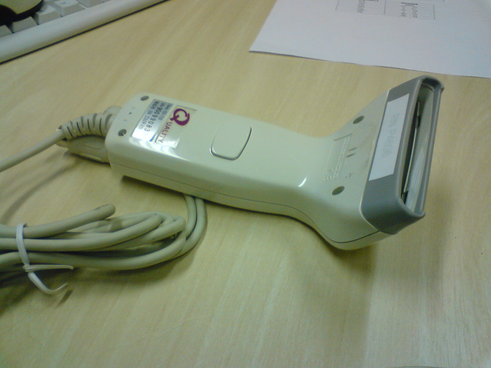
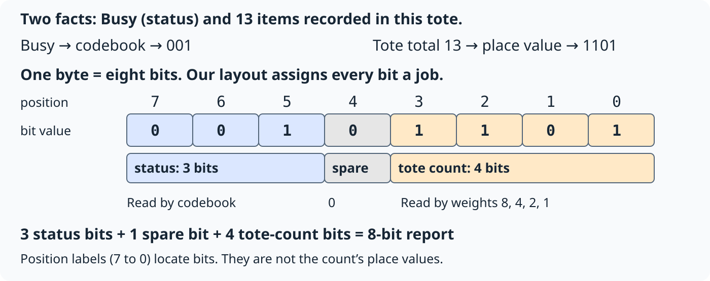
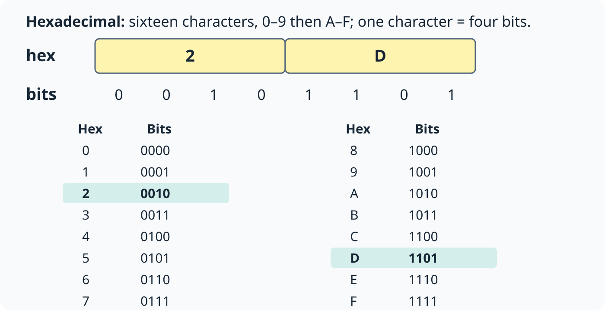
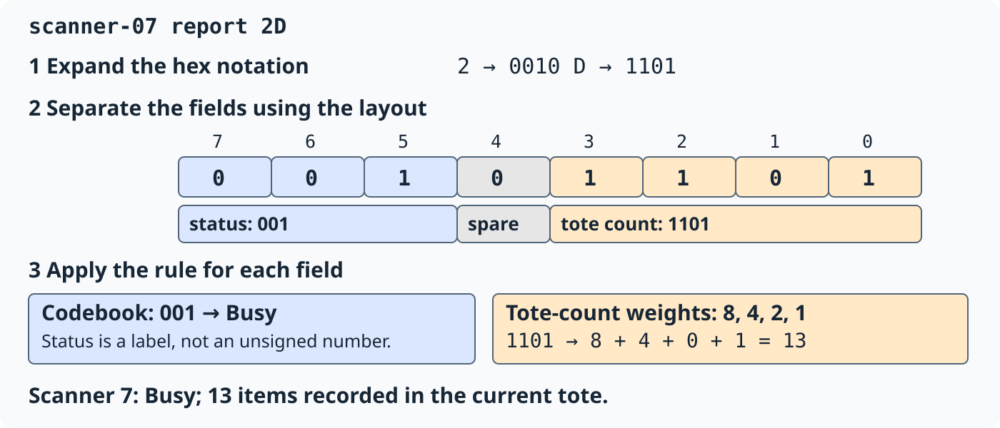

What is this scanner telling us?

- New tote (packing bin): 0. Scan and add an item: +1. Next tote: reset to 0.
- The packing app keeps the running total and reports it to the server.
- Busy, 13 means: filling this tote; 13 items recorded so far.
One bit has two values; the scanner has four states
Four scanner states
- Ready
- Busy
- Offline
- Fault
Two possible values for one bit
- 0
- 1
- A bit is a binary digit: 0 or 1.
- The scanner has exactly one status at a time. Busy means the worker is filling the tote. One bit cannot distinguish all four states.
Two bits give each of the four states a pattern
| Pattern | Agreed state |
|---|---|
| 00 | Ready |
| 01 | Busy |
| 10 | Offline |
| 11 | Fault |
- Scanner is Busy → sends 01 → server looks up 01 → recovers Busy.
- A codebook is an agreed mapping from patterns to meanings.
A fifth state needs a fifth distinct pattern
| Two-bit pattern | State |
|---|---|
| 00 | Ready |
| 01 | Busy |
| 10 | Offline |
| 11 | Fault |
| ? | Updating |
- A field is a group of bits reserved for one piece of information. Its width is its number of bits.
- Can this two-bit status field distinguish five states?
One more bit doubles the patterns
| Existing two bits | Add a leading 0 | Add a leading 1 |
|---|---|---|
| 00 | 000 | 100 |
| 01 | 001 | 101 |
| 10 | 010 | 110 |
| 11 | 011 | 111 |
- Two bits: 2 × 2 = 2² = 4 patterns.
- Three bits: 2 × 2 × 2 = 2³ = 8 patterns.
- Each bit has two choices. For n bits, there are 2ⁿ patterns.
Three bits can distinguish all five states
| Three-bit pattern | State |
|---|---|
| 000 | Ready |
| 001 | Busy |
| 010 | Offline |
| 011 | Fault |
| 100 | Updating |
| 101, 110, 111 | Not assigned |
- Five states use five of the eight patterns. Three patterns remain available.
Position changes what a digit contributes
- The app has recorded 13 items in the current tote. In decimal, that is 1 ten and 3 ones.
| Number | Tens (×10) | Ones (×1) | Total |
|---|---|---|---|
| 13 | 1 × 10 = 10 | 3 × 1 = 3 | 10 + 3 = 13 |
| 31 | 3 × 10 = 30 | 1 × 1 = 1 | 30 + 1 = 31 |
- Positional notation: digit × place value, then add.
- Decimal places grow by ten moving left: … 100, 10, 1. Binary uses the same idea, with places that grow by two.
Binary place value reads 1101 as thirteen
| Place value | 8 | 4 | 2 | 1 |
|---|---|---|---|---|
| Bit | 1 | 1 | 0 | 1 |
| Contribution | 1 × 8 = 8 | 1 × 4 = 4 | 0 × 2 = 0 | 1 × 1 = 1 |
- 1101 (binary) = 8 + 4 + 0 + 1 = 13 (decimal).
- Unsigned means zero or positive. Four bits give 16 patterns: the values 0 through 15.
- Your turn: read 1010 using the same place values.
One report carries status and the running tote count

Hex writes the same eight bits as two characters

Read the report: expand, separate, interpret

Add a zone label: how many bits are enough?
- The server now also needs the warehouse zone where the worker is filling the current tote.
- There are 19 zones. Each report names one zone, so each zone needs a different bit pattern.
| Candidate field width | Distinct patterns available |
|---|---|
| 4 bits | 2⁴ = 16 |
| 5 bits | 2⁵ = 32 |
Choose the smallest width that can distinguish all 19 zones. Explain your comparison.
Width and reason
Read a report. Size a new field.
| Task | What to do | Today’s result |
|---|---|---|
| Read an existing report | Expand hex → locate fields → apply each rule | 2D → Busy; 13 items recorded in this tote |
| Design a new field | Count required meanings → choose enough patterns | 19 zones → 5 bits, 32 patterns |
- To read a field, use its position, width, and rule.
- On the practice sheet: A reads new reports; B compares rules; C sizes a field for a larger count.